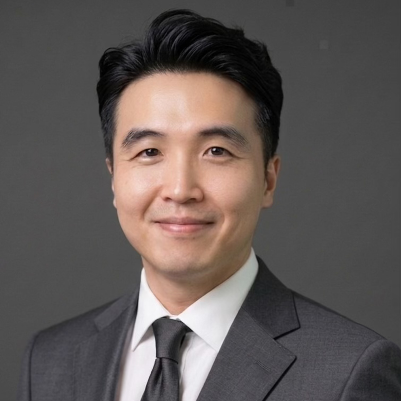

MD · MRCS · Doctor of General Surgery · ATLS
Hospital Queen Elizabeth II, Kota Kinabalu, Sabah

About Me
I am a General Surgeon with special interest in Laparoscopic Colorectal and Hernia Surgery, based at Hospital Queen Elizabeth II in Kota Kinabalu, Sabah. My journey in medicine began at Jinan University, China, and I have since trained and practised across Sabah for over a decade.
I hold a Doctor of General Surgery from the National University of Malaysia (UKM) and am a Member of the Royal College of Surgeons, Edinburgh (MRCS). My commitment to the field extends to education — serving as an MRCS examiner, cancer awareness speaker, and coordinator for international surgical conferences.
I speak English, Malay, and Chinese, allowing me to communicate directly and clearly with patients from diverse backgrounds across Sabah.
Areas of Expertise
Minimally invasive bowel resections, colon cancer surgery, rectal procedures with faster recovery.
Laparoscopic inguinal, umbilical, incisional and complex abdominal wall hernia repairs.
Diagnostic and therapeutic upper GI endoscopy and colonoscopy for bowel health evaluation.
Acute abdominal emergencies, trauma surgery and critical care surgical management.
Screening, diagnosis and surgical management of colorectal cancers with a multidisciplinary approach.
Career Journey
Leadership & Recognition
Research
Than DJ, Chong SZC, Sultan MAH, et al. · Malaysian Journal of Medicine and Health Sciences 19(6):368–370
DOI: 10.47836/mjmhs.19.6.49Than DJ, Perumall VV, Johan S, et al. · Einstein (São Paulo) 21:1–3
DOI: 10.31744/einstein_journal/2023RC0078Than DJ, Chen JKS, Bolong MF, et al. · ANZ Journal of Surgery 92(3)
DOI: 10.1111/ans.17073Rajanthran SK, Singh HC, Than DJ & Hayati F. · BMJ Case Reports 13(12):240905
DOI: 10.1136/bcr-2020-240905Patient Stories
Every patient's journey matters. Here are some of the kind words shared by those I've had the privilege of caring for.
"Dr. Than explained everything so clearly before my surgery. I felt safe and well-cared for throughout. Recovery was much faster than I expected."
"My hernia repair was done laparoscopically. Minimal pain, back to normal in days. Very grateful for Dr. Than's skill and patience."
"医生很耐心，用华语解释了手术的整个过程。手术后恢复很快，非常感谢！"
Your photo with patients will appear here.
Contact us to add testimonials.
Get In Touch
Thank you! Your message has been received. Dr. Than will be in touch shortly.